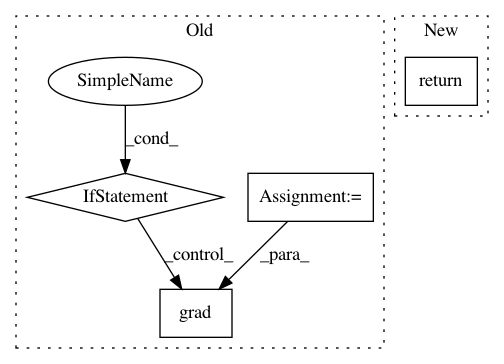

3c38ff6794c12b84059b7a442e95b884c4f86a16,mcex/core.py,,model_logp_dlogp,#Any#Any#Any#,85
Before Change
mapping = IASpaceMap(dvars)
logp = logp_calc(model)
calculations = [logp] + [grad(logp, var) for var in dvars]
f = function(model.vars, calculations, allow_input_downcast = True, mode = mode)
def fn(state):
After Change
return model_func(model, dlogp_calc(model, dvars), mode)
def model_logp_dlogp(model, dvars = None, mode = None ):
return model_func(model, [logp_calc(model), dlogp_calc(model, dvars)], mode)
The functions build graphs from other graphs
In pattern: SUPERPATTERN
Frequency: 3
Non-data size: 4
Instances
Project Name: pymc-devs/pymc3
Commit Name: 3c38ff6794c12b84059b7a442e95b884c4f86a16
Time: 2012-07-27
Author: jsalvatier@gmail.com
File Name: mcex/core.py
Class Name:
Method Name: model_logp_dlogp
Project Name: pymc-devs/pymc3
Commit Name: 3c38ff6794c12b84059b7a442e95b884c4f86a16
Time: 2012-07-27
Author: jsalvatier@gmail.com
File Name: mcex/core.py
Class Name:
Method Name: model_dlogp
Project Name: pymanopt/pymanopt
Commit Name: eac38dbe9694bdfa6c2050528d8cc6a64747e933
Time: 2020-02-01
Author: niklas.koep@gmail.com
File Name: pymanopt/autodiff/backends/_autograd.py
Class Name: _AutogradBackend
Method Name: compute_gradient